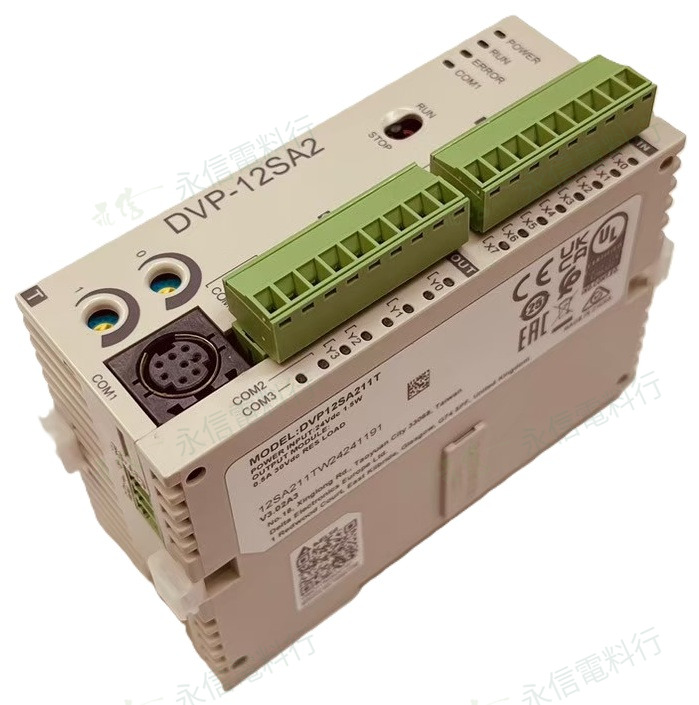

商品照片已套用永信電料行淡綠灰斜向浮水印；點選縮圖可切換角度。
 台達電 DELTA
台達電 DELTA進階薄型 PLC 主機｜DVP-SA2
DVP12SA211T 12 點 I/O｜NPN 電晶體輸出
DVP-SA2 進階薄型可程式控制器，24VDC 供電，內建 8 點數位輸入與 4 點 NPN 電晶體輸出；本頁將完整型號、I/O、電源、通訊、程式容量與高速功能分開整理，避免只依外觀或簡稱選型。
系列DVP-SA2
總 I/O12 點
輸入8 點數位輸入
輸出4 點 NPN 電晶體
電源24VDC
程式容量16k steps
規格核對提醒
本頁規格以本批商品銘牌與台達官方 DVP 系列資料交叉整理。PLC 型號相近但 I/O 點數、供電、輸出型式、通訊與高速功能可能不同，替換時請以完整型號與原設備需求核對。
本網站不顯示即時庫存、價格與交期；實際供應狀況請依完整型號另行確認。
MODEL & SELECTION
完整型號與選型重點
- 完整型號：DVP12SA211T，詢價與替換建議提供完整字串，不只提供系列簡稱。
- 「T」為電晶體輸出型，本型號依台達 DVP 型號規格表對應 NPN 電晶體輸出。
- 高速脈波與高速計數功能對端子分配有明確限制；實際接線與頻率配置請依該型號操作手冊。
- 維修替換時除 DVP12SA211T 全型號外，還要核對 24VDC 供電、NPN 輸出、I/O 點數、通訊與程式需求。
- 原設備核對：如為維修替換，建議一併提供原 PLC 正面、側面銘牌、端子接線與整機控制盤照片。
TECHNICAL SPECIFICATIONS
主要規格整理
品牌台達電 DELTA
完整型號DVP12SA211T
系列DVP-SA2 進階薄型主機
電源輸入24VDC；本批實物銘牌標示 1.5W
內建 I/O12 點：8DI + 4DO
數位輸入8 點；DVP 標準規格為 24VDC ±10%（5mA），可配合 NPN(Sink)／PNP(Source) 輸入形式
輸出型式NPN 電晶體輸出
本批銘牌輸出額定0.5A / 30VDC RES LOAD
程式容量16k steps
資料暫存器10k words
基本指令最快執行時間0.35 μs
通訊介面內建 1 組 RS-232、2 組 RS-485
通訊協定Modbus ASCII／RTU；支援 PLC Link
高速脈波輸出4 點：2 點 100kHz + 2 點 10kHz
高速脈波輸入8 點：2 點 100kHz + 6 點 10kHz；1 組 A/B 相最高 50kHz
運動控制支援雙軸同動、直線／圓弧補間
擴充支援 DVP-S 系列左側及右側模組
外觀尺寸約 96(H) × 37.4(W) × 60(D) mm
商品照片5 張
規格來源：本批實物銘牌、台達 DVP 系列官方型錄及對應系列官方產品資料。硬體版本、負載型態與端子功能仍可能影響實際使用條件，安裝／替換前請以該型號最新原廠文件與現場需求為準。
OFFICIAL REFERENCE
原廠資料核對
台達官方資料
本頁的程式容量、資料暫存器、通訊、I/O 與系列性能以台達官方 DVP 系列型錄及系列產品資料為主要來源；實物銘牌則優先用於本批商品的電源與輸出額定標示。
INQUIRY CHECKLIST
詢價與替換建議提供
01
完整型號
DVP12SA211T 與側面／背面銘牌。
02
電源與 I/O
供電電壓、輸入／輸出點數與輸出型式。
03
程式／通訊
如為替換，確認程式、通訊埠與外接擴充模組。
04
需求數量
提供需求數量與設備維修時程。